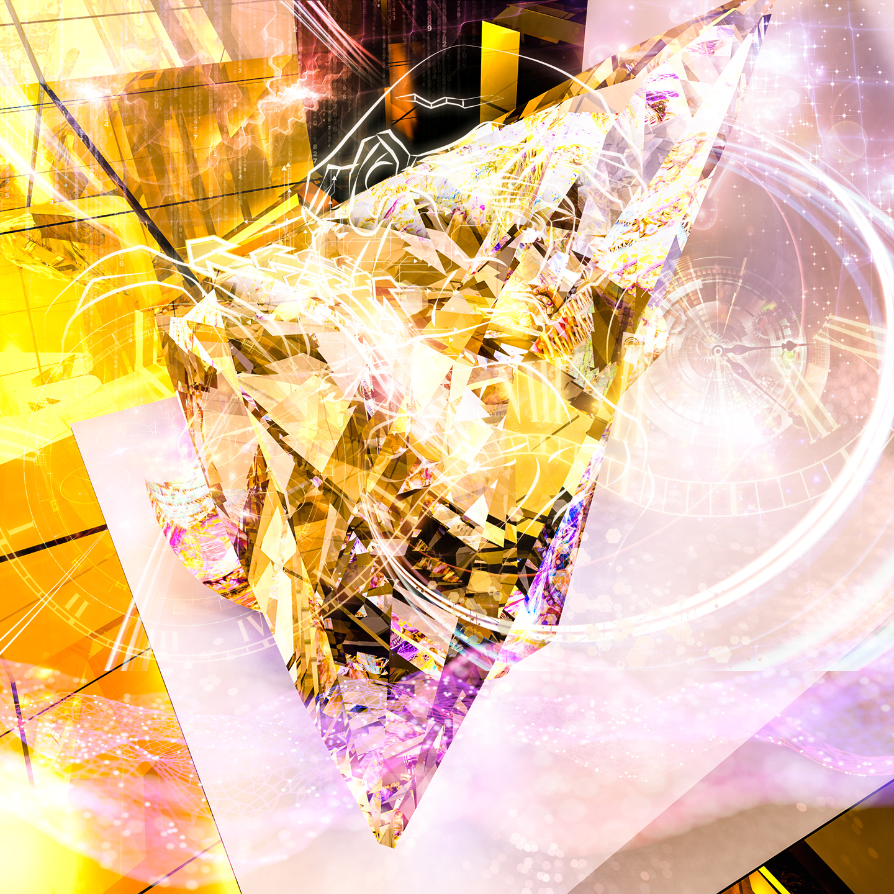

LES BEAUX-ARTS IA DE QUÉBEC.IA
Définir le genre des Beaux-Arts en IA
Lancement d’envergure dans les grandes capitales
Québec, Montréal, Vancouver, Saint-Martin, Beverly Hills, Panama, Brésil, Paris, Milan, Principauté de Monaco, Genève, Belgique, Allemagne, Luxembourg, Espagne, Autriche, Londres, Fédération de Russie, Aspen, Maui, SoHo, Israël , La Jolla, Macao, Dubaï, Inde, Qatar, Arabie Saoudite, Beijing, Shanghai, Hong Kong, Tokyo et Tapei.
Québec.IA présente un nouveau mouvement artistique

“Les artistes qui créeront avec l’IA ne suivront pas les tendances, ils les détermineront.“ — Les Beaux-Arts de Québec.IA
Un mélange d’art et de science dans l’esprit de Léonard de Vinci
Ouvrant la porte à un nouveau mouvement artistique au 21 ème siècle, les Beaux-Arts de Québec.IA suscite déjà un émoi parmi les plus grands collectionneurs d’art ainsi que parmi les personnalités les plus brillantes, les plus influentes et les plus iconoclastes du monde.
Captivant un public averti, les Beaux-Arts de Québec.IA reflète une diversité esthétique, une richesse conceptuelle et le respect de la créativité la plus pure exprimée par une machine. À la Renaissance, le pape Jules II a commandité le peintre Michel-Ange, afin que celui-ci réalise le plafond de la chapelle Sixtine. Aujourd’hui, vous pouvez commander, de la même façon, une œuvre d’art IA à la Maison des Beaux-Arts de Québec.IA.
Nous préparons une campagne de relations publiques dans le monde entier avec la participation à des émissions télévisées et avec la confection d’un documentaire spécialisé.
L’Académie de Québec.IA présente : IA 101 pour les artistes
Confectionner des créations IA légendaires: un cours de 75 minutes bien conçu pour les artistes.

Le Secrétariat général de QUÉBEC.IA présente le premier survol mondial de l’IA pour les artistes.
Magnifiant les créations les plus pures, proposant un enseignement d’un point de vue critique, intellectuel et historique et en ouvrant les portes à un nouveau mouvement artistique, la Maison des Beaux-Arts de Québec.IA alimente la passion qui anime les artistes de l’IA les plus performants du moment.
Réservation de groupe : secretariat@montreal.ai
“La technologie de création artistique de notre époque sera l’IA.“ — Rama Allen
Conçu pour les artistes, #AI4Artists est créé pour inspirer les artistes qui, avec IA, façonneront le 21ème siècle.
Un sentiment de mystère… et une compréhension profonde du monde, des gens et de la nature humaine.
Un nouveau jour est arrivé dans monde artistique
Le 25 octobre 2018, l’histoire du marché de l’art a été chamboulée. La première œuvre d’art en intelligence artificielle a été vendue aux enchères de Christie’s et a bouleversé les attentes en atteignant 432 500 dollars.

“Un porte-parole de Christie’s nous a parlé de l’excitation du marché face à ce changement important: “Nous pouvons confirmer qu’il y avait cinq soumissionnaires différents de toutes les régions du monde qui étaient en concurrence pour le lot à ce prix élevé, ce qui semble être un bon indice de l’intérêt des collectionneurs et du potentiel de marché futur pour l’art de l’intelligence artificielle en général…”“ — Adam Heardman, MutualArt
Références
- The first AI artwork to be sold in a major auction achieves $432,500 after a bidding battle on the phones and via ChristiesLive — Christie’s
- Eerie AI-generated portrait fetches $432,500 at auction — Devin Coldewey, TechCrunch
La Maison des Beaux-Arts de Québec.IA
Histoire des Beaux-arts de l’IA: la construction d’un héritage
La Maison des Beaux-Arts de Qu√©bec.IA est en avance sur une tendance qui aura un impact profond sur l‚Äôindustrie internationale de la mode, des beaux-arts et de la joaillerie : un march√© d‚Äôune valeur de 350 milliards de dollars par an ( üåê http://www.billionaire.tv/TheGazette.pdf ).
“Pour identifier les œuvres véritablement novatrices, nous ferions mieux de cesser de nous questionner à savoir où se situe la frontière entre le travail de l’artiste et l’utilisation des outils de l’IA, et de plutôt commencer à nous demander si des artistes humains utilisent l’IA pour approfondir leurs concepts et leur esthétisme plus que les chercheurs ou codeurs.“ — Tim Schneider et Naomi Rea, artnet, 25 septembre 2018
Un renouveau des grands idéaux de la Renaissance. | Les agents d’intelligence artificielle de la Maison des Beaux-Arts de Québec.IA se bonifient grâce à leurs expériences pour concevoir des œuvres d’art et une vision surhumaines! Nos créations sont des purs objets de désir : une poésie fascinante, originale et vibrante de l’IA.

Exaltant l’apprentissage en profondeur, l’apprentissage par renforcement, les réseaux antagonistes génératifs et le méta-apprentissage avec une inhabituelle élégance, la Maison des Beaux-Arts de Québec. IA propose des créations surhumaines, dévoilant un monde majestueux de secrets cachés:
❖ Le parfum de l’IA (parfums)
Une ligne aussi enchanteresse que les muses qu’elle inspire.
 — Signé: Montreal.IA")
‚ùñ Haute-Joaillerie IA Multi-Mondes ( üíé )
Une collection qui est sur le point de redéfinir l’industrie du diamant du XXIème siècle.
La Maison des Beaux-Arts de Québec.IA est pionnière dans les nouvelles coupes de diamants qui atteingnent un sommet sans précédent en matière de brillance, de scintillement et de dispersion pour les fashionistas qui définiront les tendances de la haute-joaillerie de notre époque.
")
❖ Oeuvres d’art (signées: Québec.IA)
Des oeuvres originales numérotées et signées, certificat d’authenticité compris.
Une odyssée au coeur univers parallèles cosmologiques, divins et mythologiques rendue possible par l’IA.
Une histoire légendaire: la source d’un héritage exceptionnel
Le secrétariat général du Conseil exécutif des Beaux-Arts de Québec.IA
Catalyseur professionnel et expérimenté dans les domaines de la recherche innovante, de l’ingénierie financière et du luxe, le président-fondateur de Québec.IA, Vincent Boucher, a reçu le 15 octobre 2009, le prestigieux certificat Record du monde Guinness pour sa Tourmaline Paraiba taillée la plus importante au monde.

Un travail d’innovation intellectuelle, esthétique et technique | La clairvoyance stratégique de Vincent Boucher et sa capacité à mener l’un des projets les plus ambitieux de l’Histoire lui ont permis de se positionner à la fine pointe de son domaine et de se forger une réputation bien méritée à l’échelle mondiale.

“L’homme d’affaires (Vincent Boucher) acquiert la pierre la plus rare au monde.”“ — Mike King, The Gazette

Une célébration vraiment spéciale qui marquera l’histoire!
Pour André Breton, le père du surréalisme, le but de l’art est l’unification du réel et de l’imaginaire. Les Beaux-Arts de Québec.IA réalise le rêve de Breton. Une célébration vraiment spéciale dans le monde des beaux-arts, de la mode et de la haute-joaillerie et qui fera certainement l’histoire!
Nous recherchons des ambassadeurs et des partenaires.
✉️ Courriel : info@quebec.ai
üìû T√©l√©phone : +1.514.829.8269
üåê Site web : http://www.quebec.ai/
üìù LinkedIn : https://www.linkedin.com/in/montrealai/
üèõ Secr√©tariat G√©n√©ral de Qu√©bec.IA : 350, RUE PRINCE-ARTHUR OUEST, SUITE #2105, MONTR√âAL [QC], CANADA, H2X 3R4 *Conseil ex√©cutif et bureau administratif
#IntelligenceArtificielle #IntelligenceArtificielleQuebec #QuebecIA